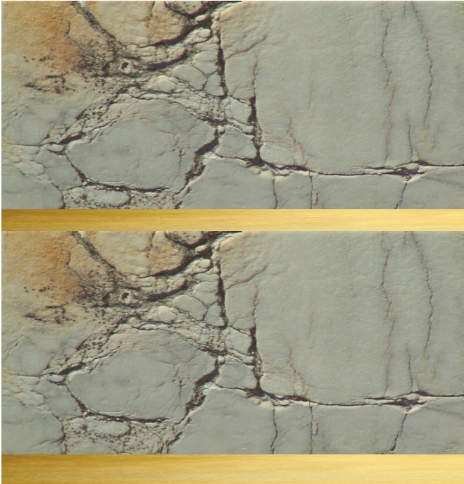
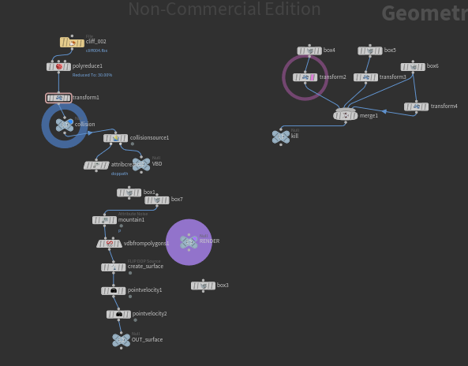
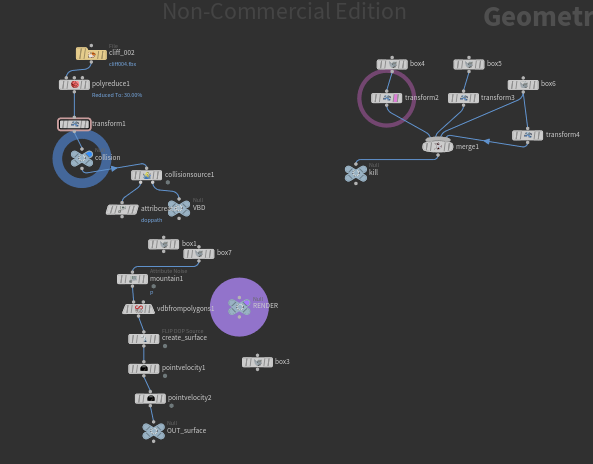

Undergraduate Capstone
In my final capstone project, I am undertaking the task of creating a captivating 3D environment inspired by the concept art of Max Suleimanov. This endeavor involves a meticulous process encompassing various software and techniques to bring the envisioned scene to life.To Start, I will employ Blender for the modeling and sculpting of the buildings.For the natural elements, such as cliffs and rocks, I plan to utilize Megascans within the Unreal Engine.To simulate the waterfall realistically, I will leverage the power of Houdini and its flip fluid tools.
 Max Suleimanov, Pavilion (Reference Image)
Max Suleimanov, Pavilion (Reference Image)
Weekly Project Updates: week 1-2, January 19-26
 Most recent update for week 1-2
Most recent update for week 1-2
This week, I worked more on completing the buildings for the 3D environment. My goals for the end of this week are to finish the base structure of the building and begin sculpting the details, such as wear and tear and cracks. Furthermore, after talking to my mentor, he suggested that I use Megascans for the cliffs instead of modeling them from scratch. Additionally, he recommended creating a procedural system in Houdini that will generate cracks and damages on my building. I will be incorporating his suggestions into my project.
Weekly Project Updates: week 2-3, January 26 - February 2

 Most recent update for week 2-3
Most recent update for week 2-3
Throughout this week, I dedicated my efforts to crafting the cliff model that would serve as the centerpiece for the main waterfall. To achieve this, I merged various models from Megascans, seamlessly blending them to construct the terrain. I remeshed it and integrated it into Houdini, where it assumed the crucial role of simulating collisions for the main waterfall.In addition to this, I also worked on the collisions for the two smaller waterfalls. Guided by valuable input from my mentor, I embraced the innovative idea of using trim sheets to texture repeating materials across the mesh. I am eagerly looking forward to incorporating these trim sheets into my work in the coming week.
Weekly Project Updates: week 3-4, February 2 - February 9
This week, I've been working on creating the trimsheet for texturing purposes. To develop the trimsheet, I had to first block in the sections I want to create. Each section represents different materials that I will use to texture each model. I've organized four sections for four different materials, specifically two for marble textures—one with more cracks than the other—and two for gold textures, with one of the gold sections featuring more rust and damage than the other. I've already sculpted the two marble models, and my plan is to also sculpt the gold sections. Once I finish sculpting all the sections, the next step is to bake the 3D model into a 2D image. This image will then be sent to either Substance Painter or Photoshop to add the base color. This detailed process ensures that the trimsheet becomes a crucial element in enhancing the overall aesthetics and realism of the final 3D models.


Most recent update for week 3-4, the Left is the Reference Image and the Right is the 3D model
Next, I exported my cliff into Houdini to serve as the collision for my waterfall. Once imported, I converted it into a VDB (Voxel Data Base). After the conversion, I could seamlessly integrate it into my simulation to influence the particles. Creating the simulation was relatively straightforward for me due to my experience with water FX. I added an emitter and incorporated a noise displacement that animated over time. Utilizing the shelf tools available in Houdini, I laid the groundwork for the simulation. I introduced velocity, rest, and noise to enhance realism. Additionally, I implemented kill areas to prompt particle deletion upon contact with those designated regions. Upon completion, my mentor acknowledged the quality of my simulation. However, he recommended adding more elements to break up the waterfall further.
.png) 

Right: Simulation Setup, Left: Collison and Kill boxes Setup
Waterfall Simulation